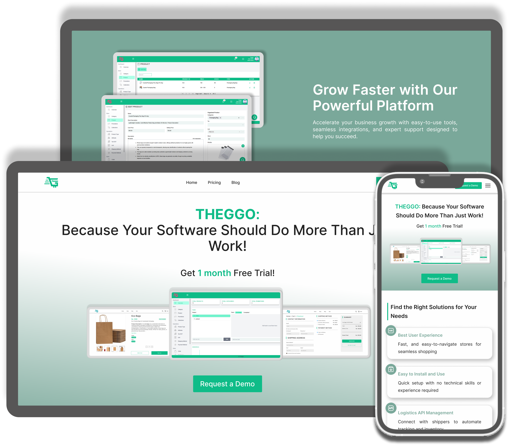
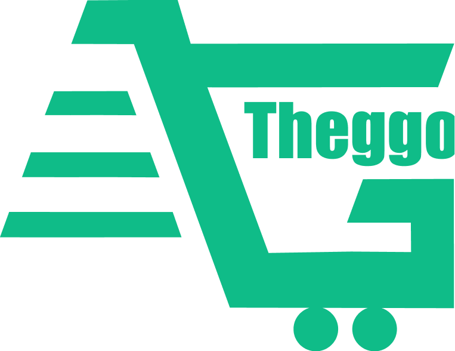
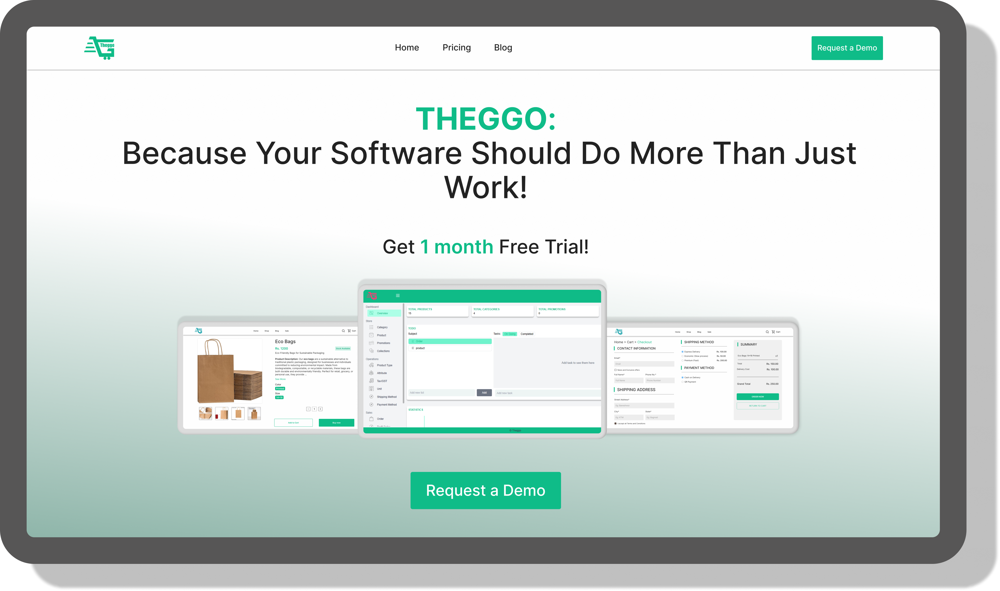
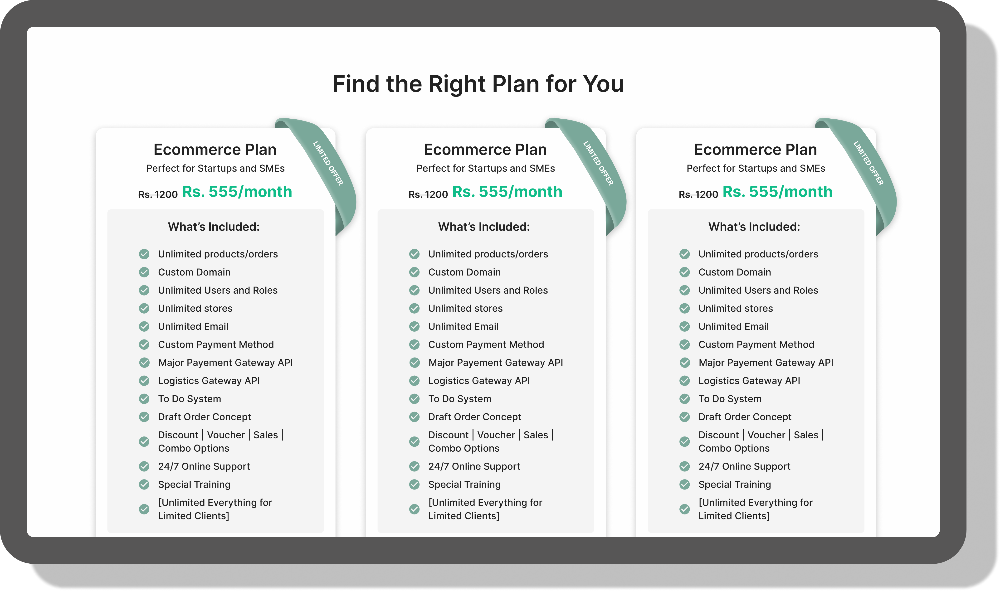
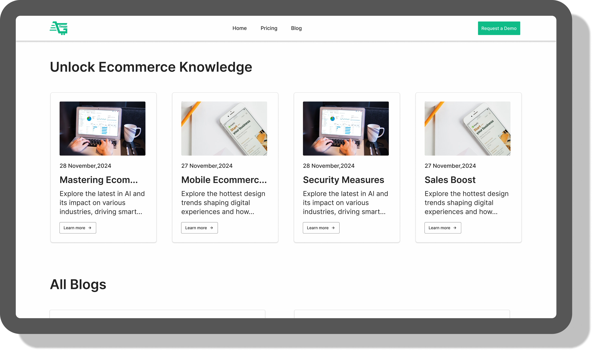
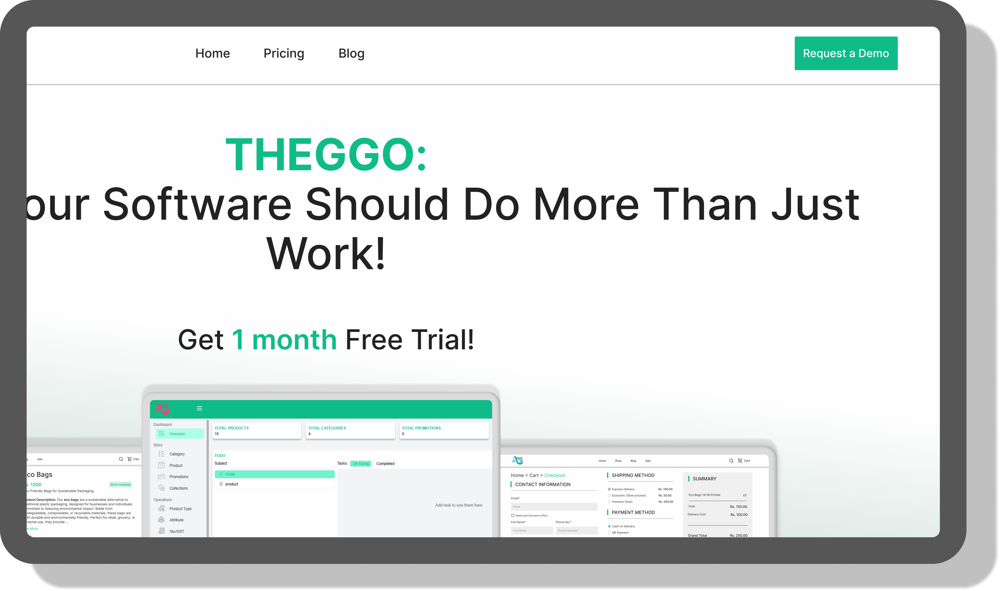

Platform Clarity
The website needed to explain what Theggo offers and help visitors understand its software marketplace concept without overwhelming them with information.
A responsive website designed for Theggo, a software marketplace connecting people looking to buy and sell digital solutions. My contribution covered the brand logo and the website's desktop and mobile interfaces, including the Homepage, Pricing, and Blog pages.

Theggo is a technology-driven platform developed by CareInfo Solutions to simplify the process of buying and selling software. Its marketplace-oriented approach serves tech professionals and business owners looking for digital solutions.
I was responsible for creating the website experience from the ground up, starting with logo design and continuing through wireframes, visual design, responsive layouts, and final handoff.
The goal was to establish a clear and cohesive digital presence that communicates Theggo's purpose, presents its offerings, and provides visitors with straightforward ways to explore the platform.
The project covered the visual identity and responsive website design for Theggo.
As a new platform, Theggo needed a website that could introduce its software marketplace concept and communicate its value to potential users. These three design considerations guided the work:
The website needed to explain what Theggo offers and help visitors understand its software marketplace concept without overwhelming them with information.
The Homepage, Pricing, and Blog pages served different purposes. Each needed a clear content structure so visitors could understand the platform, explore its offering, and access relevant content.
As a new digital product, Theggo needed a recognizable visual identity. The logo, typography, colors, and interface components had to work together across the website.
The design process focused on understanding the software marketplace concept, establishing a visual direction, and translating the requirements into responsive website interfaces.
The website was organized around three primary pages, each serving a distinct purpose within the visitor experience.
A consistent visual foundation was established to connect Theggo's brand identity with its website interfaces.
Designed a logo to establish a recognizable identity for Theggo. The visual direction aimed to reflect the platform's modern, technology-focused positioning.
Defined a color palette to support the brand identity and maintain visual consistency across the website. The selected colors were applied to backgrounds, typography, buttons, and other interface elements.

Inter was used as the primary typeface, creating a consistent typographic system for headings, body text, labels, and interface elements.

Iconography was selected and styled to complement the overall visual language.
| Property | Example |
|---|---|
| Icon Source | Iconify |
| Standard Size | 24 × 24 px |
| Stroke Weight | 3 px |
| Alignment | Center-aligned |
| Style | Outline |
I created reusable components for desktop and mobile, including the navbar, mobile menu, buttons, and footer, to maintain consistent styling and layouts across the website.

I developed desktop and mobile layouts to maintain consistent content structure, readable typography, accessible controls, and clear navigation across different screen sizes.

Introduces Theggo and communicates its software marketplace offering, helping visitors understand the platform and explore its main features.

Presents pricing-related information in a structured layout, making the available offering easier for visitors to review and compare.

Provides a dedicated space for publishing and browsing articles and other informational content.

Three key design decisions shaped Theggo's website: establishing a distinct brand identity, organizing pages around their purpose, and creating a clear visual hierarchy with prominent calls to action.





The project established the initial brand identity and responsive website design for Theggo.
Created a logo and visual direction to give the new platform a recognizable identity.
Designed the Homepage, Pricing, and Blog pages around their respective content and purposes.
Established shared typography, colors, iconography, and interface components across the website.
Delivered desktop and mobile layouts to support the website experience across different screen sizes.
The project gave me experience in taking a new digital product from initial brand exploration to responsive website design, while collaborating with my mentor throughout the process.
Take a look at some of my other design projects.